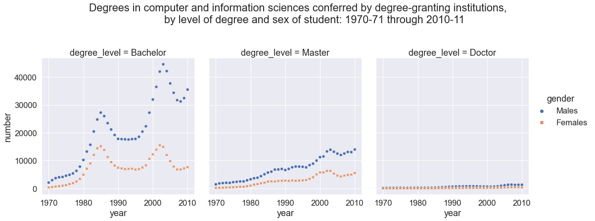

Assignment 4: Preparing Data for Analysis¶
Due: 2020-10-04
Objective & Evaluation¶
You can earn prepare level 2 by cleaning two datasets as outlined in the cs_degrees.ipynb and travel_time.ipynb notebooks.
To earn access level 2 you must clean a third dataset, following the airlines.ipynb or safi_full.ipynb notebooks. Note that this is the SAFI dataset we’ve been working with in class, but a messier version of it. You know what some of the fixes are because they’re in the notes and some of what it will look like when it’s done.
To earn python level 2, you must complete safi_full.ipynb. Specifically, you must successfully use list or dictionary comprehensions and conditional statements, beyond those provided as hints.
To earn level 2 for summarize and visualize, include additional analyses after cleaning the datasets. You’ll need at least two types of plots and two different ways of using summary statistics and to interpret the results.
Instructions¶
For this assignment, your assignment is to clean datasets in notebooks and include narrative description of how you’re making decisions about the data cleaning. At the end of each cleaning, save the cleaned dataset to the data folder with an informative file name.
When you accept the assignment, there will be template notebooks in the repository. These have significant hints to guide your efforts.
There is an issue type with a todo list, try that out to plan and track questions you have.
You can work with this assignment in 2 ways:
Git Workflow¶
Click the green code button and copy the url.
clone the repository as below where th eurl is the one you copied from GitHub. In your terminal on Linux or Mac or on the GitBash on Windows (install instructions on tools section of syllabus )
cd path/where/you/want/a/new/folder/for/this/assignment
git clone http://github.com/rhodyprog4ds/04-prepare-username
then launch your notebook from the newly created folder.
on Linux or Mac, in the same terminal (remember you can use tab complete)
cd 04-prepare-username
jupyter notebook
or on windows, in your anaconda prompt
cd path/where/you/want/a/new/folder/for/this/assignment/04-prepare-username
jupyter notebook
work on your assignment, by opening the notebooks there and editing them.
commit your changes when you want to save a point in your progress. Either you have part workign and want to save that, or you want feedback, or you’re done. On whichever terminal you used for the
git clonecommand above
git add .
git commit -m 'description of current status of project'
push your changes when you want to share them on GitHub, (eg need help, want feedback or complete)
git push
if you will keep working after pushing, first pull down the .md conversion that was added by GitHub actions. If you don’t you’ll have to merge, it should be fine, but ask if you’re not sure.
git pull
Download and upload workflow¶
Click the green code button
choose the download via zip option
unzip
launch a notebook in the folder where you unzipped
Upload only the files you changed into the repository to replace their previous versions with the add file via upload button on GitHub. Put the notebooks at the top level and the data files in the data folder.
Tips and hints¶
Pandas can convert string to dates to be able to work with them more flexibly
With python date objects you can get the day of the week from a date
Pandas
read_excelhas:a
headerparameter can take a list as its valuetwo parameters that allow you to skip rows when you read in the data
list(range(7))check out what this line doesPandas drop can work a lot of different ways
The goal of the plot for the CS degrees dataset is: 